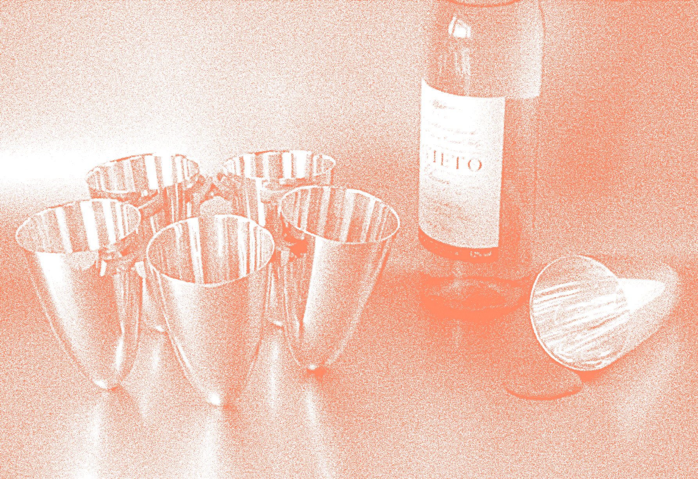
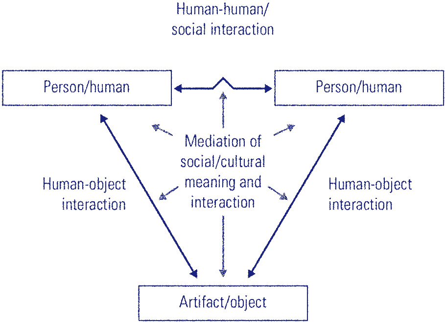

Os artifícios tecnológicos se adaptam à sociedade, assim como a sociedade se adapta aos artifícios tecnológicos. Estes dois processos estão conectados num processo, também iterativo de mutação. Os dispositivos tecnológicos e sistemas de informação não apenas se adaptam à sociedade, mas também a transformam, inserindo novos padrões de comportamento.
"O determinismo tecnológico é provavelmente um problema infundado, dado que a tecnologia é a sociedade, e a sociedade não pode ser entendida nem representada sem as suas ferramentas tecnológicas"
Manuel Castells
A pesquisadora Kristina Niedderer , investigou através de uma série de objetos, o potencial da utilização do design para a geração de consciência, afetividade e conexões entre indivíduos. Os produtos criados eram utensílios domésticos, baseados em conceitos do design interativo e de interface.
Objetivos como atenção, iluminismo, pró-atividade e senso de comunidade, podem ser frutos de produtos que se adequam à uma rotina de usuário e transformam a maneira como ele se comporta em relação à mecanismos pré-estabelecidos.
A pesquisadora investigou esse "potencial performático" dos produtos e como existem diversas possibilidades de alcançar uma consciência coletiva e relações entre outros indivíduos através das experiências que estes trazem.
"The conjecture was that we can design artifacts that communicate and cause mindfulness of others in the context of social interaction by means of a modification of function, and that such artifacts should be called performative objects."
Imagem original: Kristina Niedderer, Triangular relationship interaction
Em 1999, Niedderer desenvolve o projeto "Social Cups", um jogo de copos, que se assemelhavam a taças, porém sem uma base estável. De maneira lúdica e intuitiva, os objetos transbordam conceitos para os usuários. Assim que, para esses copos se manterem estáveis sobre uma superfície e executarem a sua função primária como objeto (armazenar os líquidos e auxiliar uma pessoa a beber um líquido), era necessário que os usuários interagissem entre si e facilitassem esse processo. Unindo pelo menos 3 copos, por um sistema de conexões era criado um novo sistema estabilidade, baseado na cooperação.
O resultado esperado era o de transmitir aos usuários uma reflexão sobre o conceito social presente ao uso dos copos, a ideia da colaboratividade como artifício de conexão e possibilidade de alcançar um objetivo em comum, nesse caso: manter os copos em pé.
A pesquisadora desenha uma tríade de relacionamentos, com causa e consequência, onde o design e os artefatos estão presentes horizontalmente aos seres-humanos, influenciando na criação e transformação de conceitos sociais e culturais.
Imagem original: Kristina Niedderer, Triangular relationship interaction
Assim, que através dessa observação e experiência, é possível compreender que os artefatos - tecnológicos e produtos de deisgn - são apenas ferramentas do nosso sistema de relações sociais, esses artefatos facilitam interações entre outros seres humanos e são potenciais geradores de cultura e pensamento crítico.
O foco do designer, nas pesquisas de usabilidade e design de interação, pode se restringir a compreender a interação usuário e máquina, melhorando a experiência de uma única pessoa com um sistema interativo. Essa é a realidade mais conhecida dentro do design de interação, e também no que conhecemos como design centrado no usuário. Sendo a atenção colocada nos meios - tecnológicos, materiais, etc - e não tanto nas relações derivadas do uso do produto.
Seria o produto final de um interface, artefato digital e suas funcionalidades, ou o impacto que gera naqueles que a utilizam e as mudanças de comportamento que causam?
Asa Raskin foi o inventor da interação nas redes sociais como a conhecemos. Em 2006, ele desenhou uma maneira de navegar pelo conteúdo de atualizações, sem cliques e sem limites. É o que conhecemos como infinite scolling ou "rolagem infinita".
Após alguns anos, o sistema é quase um padrão em todas as redes sociais da atualidade. Uma lista de novidades, fotos e links externos nos é apresentada num catálogo infinito que é alimentado em tempo real.
Recentemente, porém, o criador se diz arrependido da sua própria criação. Segundo ele, em entrevista à BBC, diz que nesse caso, o cérebro não tem tempo para limitar os impulsos o que gera um vício em checar constantemente o conteúdo, o que é financeiramente positivo para as empresas.
A minha proposição, como designer é tentar compreender procesoss cotidianos, modos de pensar e relacionamentos sociais entre pessoas e inserir ferramentas que articulem e facilitem esses processos. Assim, entendo que a interface precisa ser compreendida pelo usuário e de fácil interação, mas além disso, acredito que a interface deve conhecer a forma como o usuário se comporta e quais processos sociais irá interferir, proporcionando mudanças que promovam bem-estar e ativação do pensamento crítico.
Referências:
ANDERSSON, Hilary. Social media apps are 'deliberately' addictive to users. Bbc panorama, Cidade, p.111-222, jan. 2012.
CASTELLS, Manuel. A sociedade em rede - vol 1: A era da informação: economia, sociedade e cultura. 1. [S.L.]: Paz e terra, 2016. 632 p.
NIEDDERER, Kristina. Designing mindful interaction: the category of performative object. Design issues, Estados unidos, v. 23, n. 1, p.111-222, jan. 2012.